Работа сновидения
Что общего у этих снов?
Каждый кадр этой плёнки — сновидение. Но выведено оно тремя несовместимыми способами, и спор между ними — сюжет лекции.
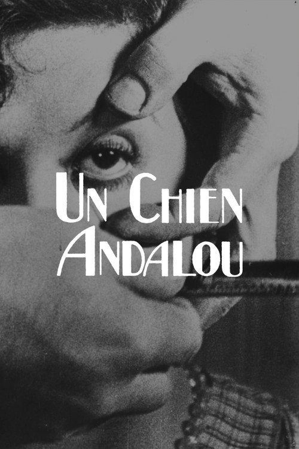
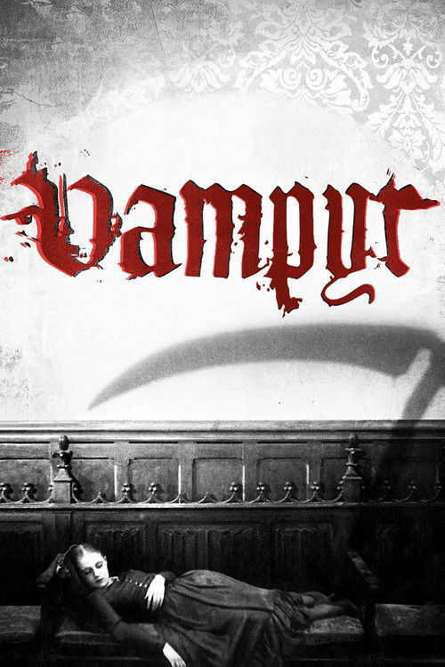


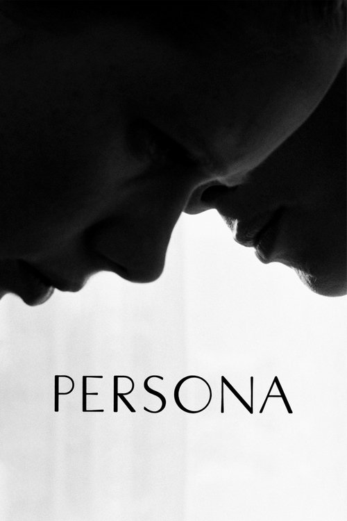
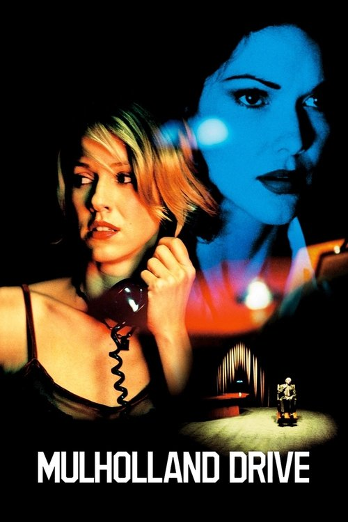
Главный вопрос
Если сон превращает скрытую мысль в образ, то умеет ли кино делать то же — и где проходит граница между сходством и подменой?
Лекция разбирает механизм сновидения у Фрейда, прикладывает его к киноформе и проверяет на трёх фильмах, каждый из которых обходится со сном по-своему: один его воспроизводит, другой расшифровывает, третий им дышит.
То, что спящий видит и наутро пересказывает.
Желание и материал дня, спрятанные за образом.
Процесс, что переводит первое во второе.
Царская дорога
В «Толковании сновидений» сон объявлен главным путём к бессознательному и исполнением вытесненного желания.
Сон не бессмыслица и не пророчество. Это работа психики, что под покровом образов проводит запретное желание мимо внутренней цензуры.
«Царская дорога к бессознательному» — статус сна в системе Фрейда.
Остаток дня: дневные впечатления, из которых сон берёт строительный материал.
Двигатель, что этот материал использует; даже тревожный сон окольно исполняет влечение.
Маскировка как компромисс
Между желанием и сознанием стоит цензура. Прямо предъявить запретное нельзя — сон идёт на сделку.
Пропустить в маске
Желание проходит на сцену, но в зашифрованном виде. Искажение не помеха, а сам смысл операции: чем сильнее сопротивление, тем причудливее образ.
Разбирать работу, не словарь
Толковать сон — значит распутывать проделанное искажение, а не подставлять значения из справочника символов.
Работа сновидения как кольцо
Механизмы работы сна
Сгущение
Один образ несёт сразу несколько мыслей; лица и места сливаются в составную фигуру.
Смещение
Значимость съезжает с важного на пустяк, и аффект цепляется к неважной детали.
Изобразимость
Отвлечённая мысль переводится в конкретный зримый образ. Здесь и проходит мост к кино.
Вторичная обработка
Наутро сон причёсывается в подобие связного рассказа.
Сон не говорит,
а показывает
Учёт изобразимости заставляет сон отказаться от слов и связок и думать пластически: причину, отрицание, «потому что» приходится передавать сменой образа, наложением, монтажным соседством.
Ровно этим занят и кинематограф. Немой экран решал ту же задачу теми же средствами — и решает до сих пор.
Учёт пригодности к изображению
Третий механизм работы сна — и точка, где словарь Фрейда становится словарём киноформы.
Четыре уравнения
Смещение. Акцент съезжает с одного образа на соседний; смысл рождается из стыка, а не из кадра.
Сгущение. Два изображения занимают одно место; составная фигура на экране буквальна.
Цензура. Решающее вырезано; пропуск и есть сообщение.
По ту сторону*. Сцена возвращается помимо нужд сюжета — фильм не может отпустить собственный образ.
*Повтор выводит за пределы работы сна: это Wiederholungszwang из «По ту сторону принципа удовольствия» (1920). Честная сноска — и мостик к финальным лекциям курса.
Не картинка, а загадка в картинках
Сон — это ребус, и прежние толкователи принимали его за рисунок.
Ребус нельзя прочесть как изображение: лодка над домом не значит «лодка над домом». Каждый элемент стоит за слогом иной мысли, и смысл собирается лишь в переводе.
Отсюда первое предостережение лекции: значение образа задаёт сеть ассоциаций сновидца, а не справочник.
Сон или символ?
Ассоциация решает
Значение образа собирается из сети ассоциаций сновидца. Словарь символов методу противоречит.
Уступка словарю
Сам Фрейд позднее дописывает главу о типических символах — компромисс, которым щедро злоупотребили эпигоны и киноведы.
Правило курса: ассоциация и контекст прежде словаря. «Типическое» допускается лишь как гипотеза, которую обязана подтвердить форма самого фильма.
Кинозал как полусон
Кристиан Метц сближает просмотр с грёзой наяву: обездвиженность, темнота и отказ от действия вводят зрителя в регрессивное, сноподобное состояние.
Жан-Луи Бодри добавляет сам аппарат: устройство показа провоцирует ту же регрессию, что и сон. Бертрам Левин ещё раньше описал «экран сновидения» — белую поверхность, на которую проецируется сон; теория переносит её на полотно кинозала.
Сходство
Поток образов накатывает на пассивного, полусонного зрителя, как сновидение на спящего.
Фильм похож на сон, но не сон
Образ вместо мысли
И сон, и фильм отказываются от слов, думают зримым и обращаются к зрителю в обход рассудка.
Кто автор и кто верит
Спящий галлюцинирует сон как явь и сам его сочиняет. Зритель бодрствует, знает о вымысле и смотрит чужое. Метц предупреждает: близость не равна тождеству.
Фрейд против сюрреалистов
1921. Бретон добивается визита на Берггассе, 19. Встреча выходит холодной; в «Les pas perdus» поэт мстит ироничным портретом усталого доктора.
1932. Обмен письмами вокруг «Сообщающихся сосудов»: Фрейд вежливо признаётся, что цели движения ему непонятны.
1938. Цвейг приводит Дали в Лондон. После встречи Фрейд пишет, что прежде числил сюрреалистов «на 95 процентов, как спирт» дураками, но техника молодого испанца заставила пересмотреть счёт.
Одностороннее родство
Движение объявило Фрейда святым патроном; патрон наследников так и не признал. Кино сюрреалистов выросло из этого безответного чувства.
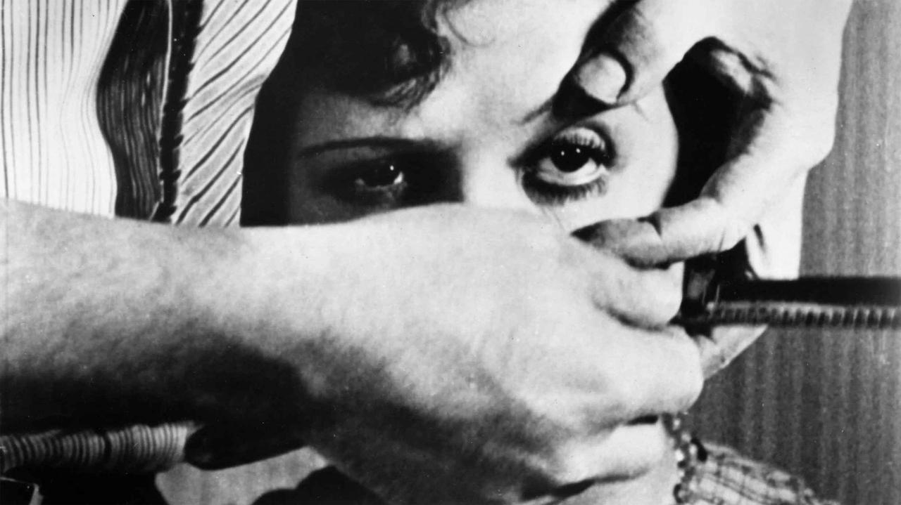
Андалузский пёс
Бритва, луна, муравьи в ладони. Фильм, собранный из снов и отказавшийся от всякой логической связи.
Сделано из двух снов
Бунюэль и Дали сложили короткометражку из двух сновидений: облако, рассекающее луну, и кисть руки, кишащая муравьями. Авторы условились вычёркивать всякий образ, которому находилось рассудочное объяснение.
Так в кино вошёл сюрреалистический автоматизм: метод, прямо опертый на сон и свободную ассоциацию из круга Бретона.

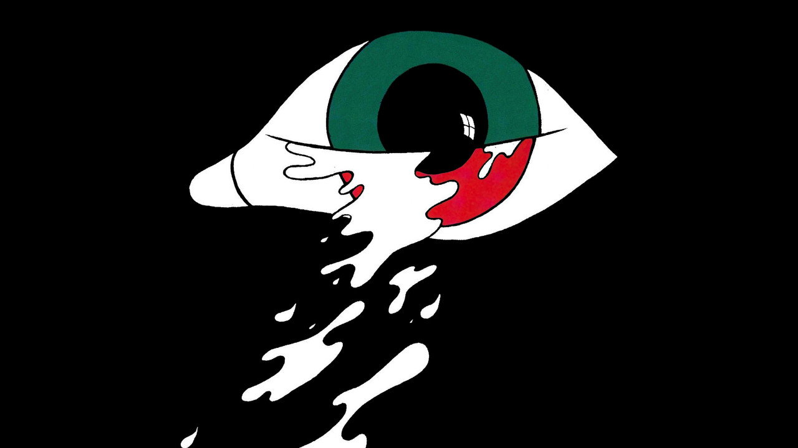
Склейка, что запрещает буквальность
Тонкое облако пересекает полную луну — и следом лезвие проходит по глазу. Монтажный удар сразу отбивает у зрителя привычку читать изображение реалистически.
Сам монтаж работает как сновидение
Титры «Восемь лет спустя» и «Около трёх часов утра» не отмеряют времени, а пародируют связность — вторичную обработку. Образы сгущаются и смещаются по логике сна: рука с муравьями, книги, обернувшиеся револьверами, рояли с тушами. Причинности нет, есть ассоциативное скольжение.
«Ничто не символизирует»
Бунюэль настаивал: в фильме ничто ничего не символизирует; охоту за смыслами он презирал и высмеивал.
Кино, что снится
«Андалузский пёс» не изображает чей-то сон и не предлагает разгадки — он сам устроен как сновидение.
Сопротивление переводу
Картина не сводится к связной мысли, ровно как настоящий сон сопротивляется полному толкованию. Разбору достаются механизмы, а не «мораль».
Воспроизводит работу сна
Первая из трёх позиций лекции: фильм повторяет саму механику сновидения, а не рассказывает о ней.
Как читали «Пса»
Сам автор: «отчаянный призыв к убийству», протест — и ярость на публику, встретившую фильм эстетским восторгом.
«К социальному кино»: защищал картину как образец кинематографа, который будит, а не убаюкивает.
«Figures of Desire»: лакановское чтение — фильм ставит само движение желания, метонимию, а не шифр со значениями.
Монография BFI: производственная и рецептивная история против накопившихся легенд.
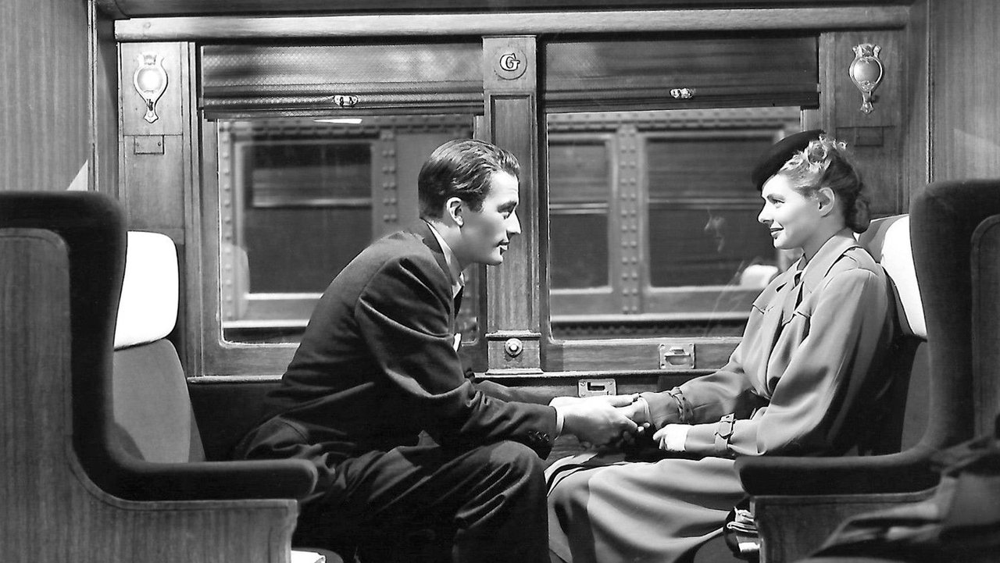
Завороженный
Аналитик расшифровывает сон пациента, чтобы раскрыть убийство и снять амнезию. Психоанализ впервые играет главную роль в голливудском жанре.
Психоанализ как мода
Продюсер Дэвид Селзник сам проходил анализ и нанял консультантом собственного терапевта Мэй Ромм. Кушетка входила в американский быт, и студия спешила превратить её в жанр.
Эпизод сновидения заказали Сальвадору Дали: остроугольные декорации, разрезанные глаза на занавесях, гигантские игральные карты. Сон получил статус аттракциона.
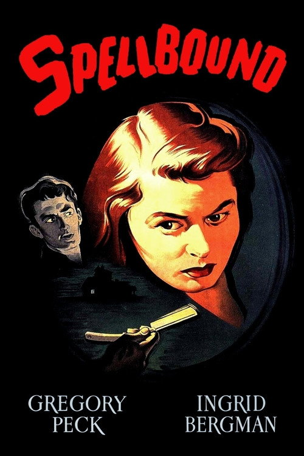
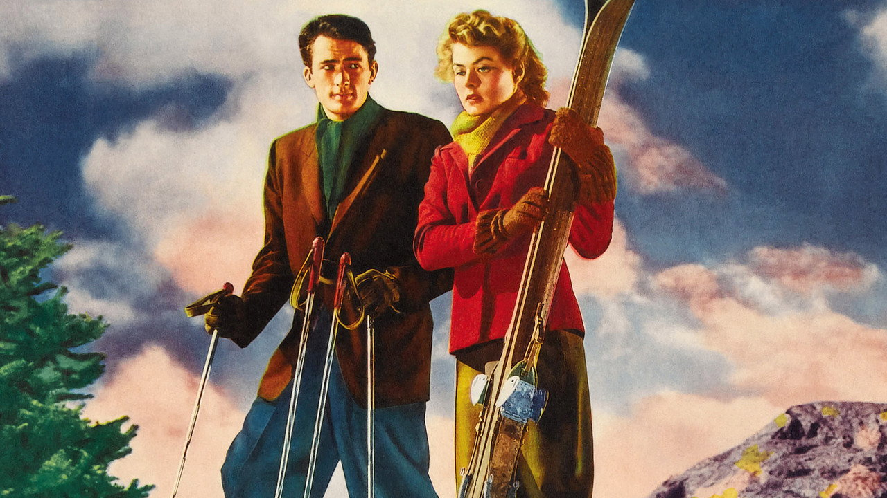
Сон, поданный как набор улик
Игорный зал с нарисованными глазами, человек без лица, наклонное колесо. Каждый образ — зашифрованная подсказка, что ждёт своего перевода.
Один образ — один ответ
Фильм разгадывает сон, как криминалист улику: параллельные линии оказываются лыжнёй, колесо — револьвером, бородатый хозяин зала — конкретным доктором. Каждой картинке назначен один ответ; когда перевод завершён, память возвращается и убийца назван. Разгадка совпадает с излечением.
Раскладывает на шифр
Сон здесь — ребус со словарём: жёсткие однозначные соответствия. Ровно та модель, от которой предостерегал Фрейд.
Сон, прирученный детективом
«Завороженный» переводит работу сна на язык жанра: сновидение перестаёт сопротивляться и становится уликой.
Ключ вместо ассоциации
Сгущение и смещение на месте, но каждому образу назначен твёрдый ответ. Анализ превращается в следствие со счастливым концом.
Расшифровывает и приручает
Драматургически безупречно, аналитически наивно — идеальный учебный контрапример для семинара.
Как читали «Завороженного»
Сам режиссёр в беседах с Трюффо отмахнулся: очередная погоня за человеком, завёрнутая в псевдопсихоанализ.
«Hitchcock and Selznick»: на площадке консультант Ромм билась за клиническую точность, продюсер — за мелодраму. Победила мелодрама.
Голливудский Фрейд как симптом: ключ-разгадка закрывает желание вместо того, чтобы его вскрыть.
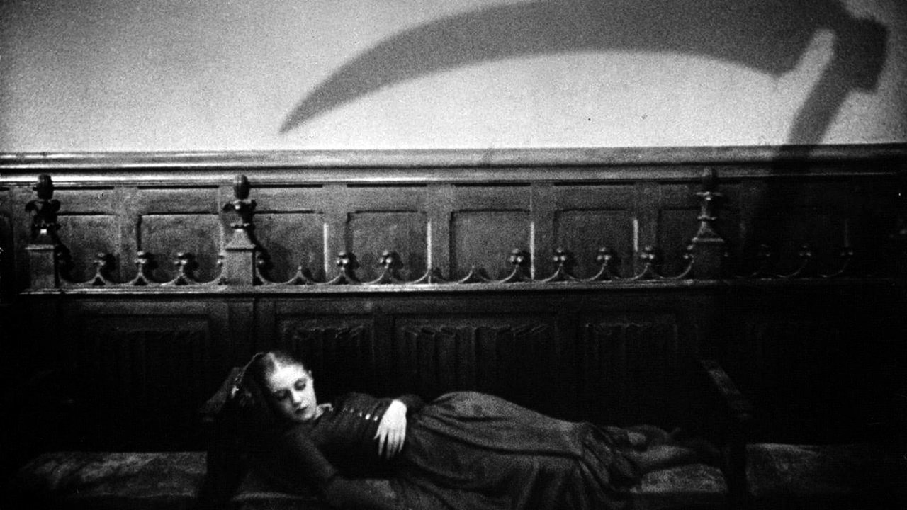
Вампир
Молодой оккультист приезжает в деревню, где явь расползается, как туман. Вероятно, самый сновидческий фильм классического кино — без единого объяснения.
Туман как метод
После «Страстей Жанны д’Арк» Дрейер снимает вольную вариацию на новеллы Ле Фаню. Финансирует картину барон Николя де Гунзбург, он же играет главную роль под псевдонимом Жюлиан Вест.
Молочная пелена изображения — осознанный приём: оператор Рудольф Матэ снимал сквозь марлю, разложив свет до состояния дымки. Подзаголовок фильма честен: это сон Аллана Грея.
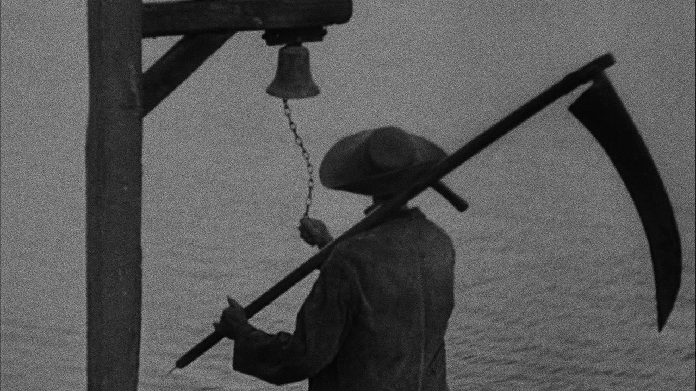
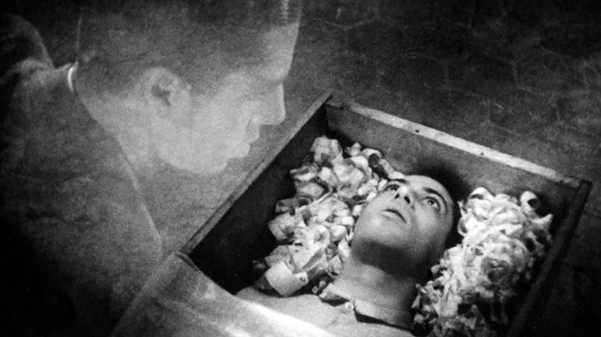
Невозможная точка зрения
Герой видит себя в гробу с оконцем и смотрит из него: своё лицо, свеча, плывущее небо. Камера занимает позицию, с которой не смотрит никто живой.
Сновидение разлито повсюду
У Хичкока сон отгорожен занавесом эпизода; у Дрейера границы нет. Тени пляшут отдельно от тел, душа героя бродит рядом с его же телом, пространство не сходится в карту. Логика сна не показана, а стала законом самого изображения.
Становится сном
Фильм не изображает сновидение и не разгадывает его. Он им дышит. Тень-двойник кланяется первой лекции.
Сон как воздух, а не шифр
Третий полюс: сновидение как онтология фильма. Для контраста — «Сны» Куросавы (1990): восемь новелл честно иллюстрируют сны автора, но остаются рассказами о снах; работа сновидения в них не работает. Различие «показывать сон» и «быть сном» — главный урок кейса.
Четыре глагола
Бунюэль воспроизводит · Хичкок расшифровывает · Дрейер растворяет · Куросава иллюстрирует.
Как читали «Вампира»
Статья в Screen: фантастическое по Тодорову и психоаналитическое чтение — фильм держит зрителя в колебании между объяснениями.
Формалист: странность «Вампира» — система повествования и стиля; никакие глубины для её описания не нужны.
Монография BFI: визионерская поэма, материя света и звука; поэтика важнее диагноза.
Думает ли кино на языке сна?
Бунюэль
Монтаж сам работает как сновидение: сгущение, смещение, пародия на связность.
Хичкок
Сон разложен на улики со словарём; работа сна приручена жанром.
Дрейер
Логика сна стала законом изображения; границы эпизода нет.
Ответ лекции: кино умеет говорить на языке сна по-разному, и различать эти случаи — сама задача разбора. Уравнения из акта I работают инструментом различения, а не универсальной отмычкой.
Рамка сна и её подделка
Всё было сном
Финал объявляет пережитое сновидением: вторичная обработка в чистом виде. Рассказ причёсан задним числом, тревога снята, мир цел.
Граница не проведена
«Малхолланд Драйв», «Шоссе в никуда», «Персона»: где кончается сон, установить нельзя, и успокоение не наступает. Шов остаётся открытым.
Тест на честность рамки: успокаивает ли она текст или взламывает его. Первое — приём драматургии, второе — работа сна, захватившая весь фильм.
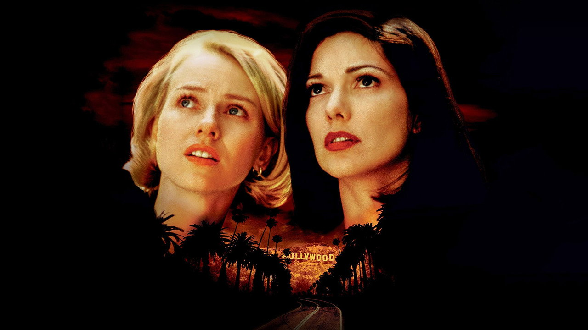
Малхолланд Драйв
Ночная авария, потеря памяти, сияющая новенькая актриса берётся раскрыть чужую тайну. Двухчасовое счастье оборачивается сном на дне отчаяния — либо не оборачивается.
Из отвергнутого пилота
История начиналась как пилот сериала для ABC: канал посмотрел материал и отказался. Французские деньги StudioCanal позволили Линчу доснять финал и перемонтировать телевизионный черновик в полнометражную картину.
Швы этой биографии остались в ткани ленты: оборванные линии персонажей, зависшие сюжеты. Каннская премьера принесла приз за режиссуру, а обломки нарратива обернулись логикой сна.
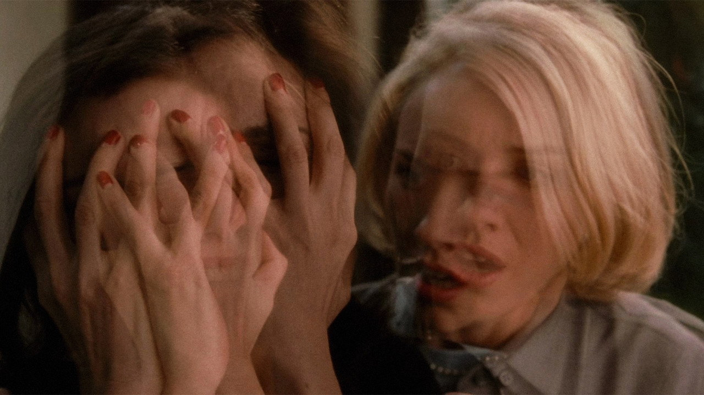
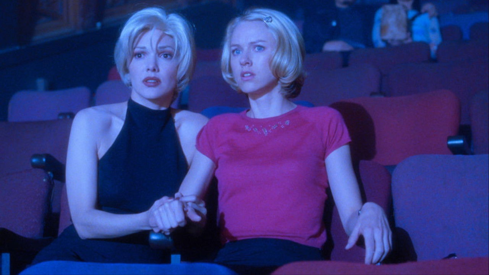
No hay banda
Конферансье повторяет: оркестра нет, всё записано. Певица падает без чувств, голос продолжает звучать. Кадр вслух объявляет собственную иллюзорность — и ровно отсюда сон начинает рушиться.
Сон, собранный по учебнику
Первые два часа устроены как исполнение желания: люди из яви Дианы переставлены в новые роли (сгущение), вина за заказанное убийство съезжает на заговор и случай (смещение), жанровая гладкость детектива причёсывает целое (вторичная обработка). Синяя коробка открывается и срабатывает порогом пробуждения: эллипсис, вырезающий переход.
Проверка аппарата
Склейка, наплыв, эллипсис и навязчивый повтор из акта I читают картину без остатка — редкий случай полной применимости.
Сон, победивший рамку
Ответ коды: весь фильм способен быть сном — пока шов неразрешим и рамка никого не успокаивает.
Автор снова молчит
Линч отказался объяснять картину и выпустил к DVD десять издевательских «подсказок». Запрет на толкование из первого кейса возвращается семьдесят лет спустя.
Пробуждение страшнее грёзы
Сон-рамка обещает утешение; здесь его нет: явь Дианы беднее и безнадёжнее сновидения, и финал не закрывает счёт.
Как читали «Малхолланд Драйв»
Отказ от ключа: десять «подсказок» к DVD пародируют охоту за разгадкой; картину предлагается переживать, решать её никто не обещал.
Cinema Journal: первая часть устроена как фантазия, вторая отдана желанию; это различие важнее вопроса «сон или явь».
Film-Philosophy: лента сама производит мысль средствами звука и света; Club Silencio — образцовая «кинематографическая идея».
Mind-game film: загадка без гарантированного решения как новый контракт со зрителем эпохи пересмотров.
Что метод даёт и где буксует
Точная оптика формы
Сгущение, смещение и изобразимость ложатся прямо на наплыв, монтажный акцент и мизансцену. Метод читает приём, а не пересказ.
Аналогия не тождество
Не всякий киносон — работа сна: бывают иллюстрация и аттракцион. Словарь символов искажает Фрейда. И зритель, в отличие от спящего, бодрствует.
Работа сна в новом кино
Словарь лекции живёт в современном экране без скидок на возраст.
Фильмы-головоломки строят сюжет на неразрешимом шве сна и яви; цифровой морфинг делает сгущение базовым спецэффектом; нейросетевое видео галлюцинирует наплывы и подмены, неотличимые от логики сновидения.
«Малхолланд Драйв», «Начало», «Помни»: зритель поставлен в позицию толкователя.
Плавное перетекание лиц и тел — сгущение, ставшее технологией.
Маршрут лекций
К семинару
Склейка × уравнения
Одна склейка или наплыв из любого фильма лекции: какое из четырёх уравнений здесь работает и что оно прячет. 300–400 слов.
Один из двух вопросов
«Прав ли Бунюэль, запрещая трактовки собственного фильма?» либо «Сон-рамка против неразрешимого шва: почему Оз успокаивает, а Линч нет». 800–1000 слов.
Просмотр
«Окно во двор» и «Шерлок-младший». Держать в уме вопрос: откуда смотрит камера и кто сшивает взгляд.